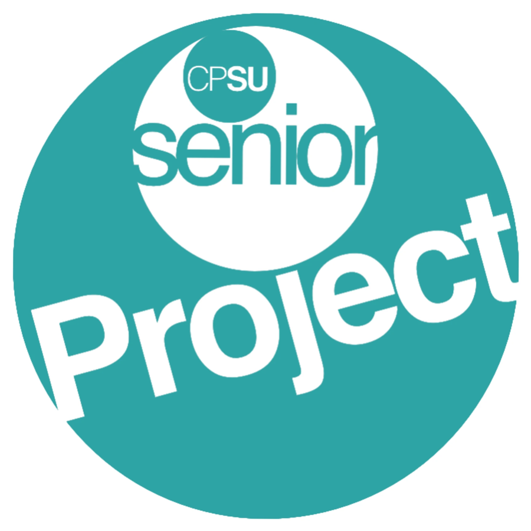

CORPORATE IDENTITY GUIDELINES · 2026
CPSU
senior
PROJECT
คู่มืออัตลักษณ์แบรนด์ สำหรับทีมงานและเพื่อนร่วมงาน
CORPORATE IDENTITY GUIDELINES · 2026
คู่มืออัตลักษณ์แบรนด์ สำหรับทีมงานและเพื่อนร่วมงาน
CONCEPT

โลโก้เดิม
โลโก้ใหม่
ตัวอักษรหนา เอียงไปข้างหน้า อ่านง่ายแม้ย่อเล็ก
เส้นความเร็วและประกายดาว แทนพลังของโครงงานที่กำลังพุ่งไป
ใช้โทนเขียวน้ำทะเลเดิมชุดเดียว เก๋แต่ไม่หวือหวา
CPSU senior PROJECT · CI Guidelines 2026
02
LOGO
ความหวังและความสำเร็จที่รออยู่ข้างหน้า
กรอบของตรา ทำให้ CPSU เด่นบนทุกพื้นหลัง
ตัวหนาเอียง น้ำหนักเท่ากันทุกตัว จดจำได้ทันที
การเคลื่อนที่ไปข้างหน้า ไปทางขวาตามทิศการอ่าน
คำรอง สีมิ้นต์ อยู่ใต้ CPSU เสมอ
ป้ายหลัก วางทับขอบล่างของตรา
CPSU senior PROJECT · CI Guidelines 2026
03
LOGO
พื้นเขียวเต็มกรอบ ใช้เป็นรูปโปรไฟล์และสติกเกอร์
พื้นโปร่งใส วางบนสไลด์ เอกสาร และโปสเตอร์
แนวนอน สำหรับหัวสไลด์ แบนเนอร์ และป้าย
ตรา CPSU อย่างเดียว ใช้เมื่อพื้นที่เล็กกว่า 120px
CPSU senior PROJECT · CI Guidelines 2026
04
LOGO
ใช้ Mark Light แถบ PROJECT สีเขียว
ใช้ Mark Dark แถบ PROJECT สีขาว
ใช้ Mark Dark ได้ตรงกับไฟล์ Primary
ใช้ Mono สำหรับงานพิมพ์ ปั๊ม หรือสกรีน
CPSU senior PROJECT · CI Guidelines 2026
05
LOGO
X
X
เว้นระยะอย่างน้อย X ทุกด้าน โดย X คือความสูงของแถบ PROJECT
| รูปแบบ | หน้าจอ | งานพิมพ์ |
|---|---|---|
| Primary / Mark | 120 px | 25 mm |
| Horizontal | 280 px | 50 mm |
| Icon | 40 px | 10 mm |
CPSU senior PROJECT · CI Guidelines 2026
06
LOGO
ย่อขยายโดยล็อกสัดส่วนเสมอ
ใช้เฉพาะสีในหน้า “สีของแบรนด์”
ต้องอ่านว่า CPSU senior PROJECT เสมอ
ทั้ง 4 ตัวใช้น้ำหนักและสีเดียวกัน
โลโก้มีมิติในตัวอยู่แล้ว
ถ้าจำเป็น ให้รองด้วยพื้นทึบสีเข้มก่อน
CPSU senior PROJECT · CI Guidelines 2026
07
COLOR
#34B5AE
RGB 52, 181, 174
ไล่เฉดฝั่งสว่าง
#25A39C
RGB 37, 163, 156
ตรา CPSU และพื้นหลัก
#1B8D87
RGB 27, 141, 135
ตัวอักษร PROJECT
#12706B
RGB 18, 112, 107
เงา และงานสีเดียว
#7FD8D0
RGB 127, 216, 208
senior และไฮไลต์
Mint Light #C2E9E7 · เส้นความเร็วเส้นที่สอง
Ink #0F2E2C · พื้นเข้ม / ตัวอักษร
Paper #F4F7F7 · พื้นสว่าง
White #FFFFFF · วงแหวนและแถบ PROJECT
CPSU senior PROJECT · CI Guidelines 2026
08
COLOR
พื้นหลัง · #34B5AE → #1B8D87 · มุม 135°
ตรา CPSU · #25A39C → #12706B · มุม 135°
60% เขียวน้ำทะเล · 30% ขาว / Paper · 10% มิ้นต์
ไล่เฉดเฉพาะเขียวน้ำทะเลด้วยกันเท่านั้น จากสว่างไปเข้ม ทิศมุมซ้ายบนไปขวาล่าง
CPSU senior PROJECT · CI Guidelines 2026
09
TYPOGRAPHY
หัวเรื่อง · ภาษาไทยและอังกฤษ
Aa กขค
หัวสไลด์ ข้อความเด่น และป้าย
เนื้อหา
Aa กขค
เนื้อหา คำอธิบาย และตาราง
ในโลโก้เท่านั้น
ห้ามพิมพ์ใหม่ ให้ใช้ไฟล์โลโก้เสมอ
Aa
Aa
Aa
Aa
Aa
ขนาดมาตรฐาน 120 · 72 · 44 · 32 · 24 px
CPSU senior PROJECT · CI Guidelines 2026
10
GRAPHICS
1
เส้นความเร็วเป็นแนวนอน พุ่งไปทางขวาเสมอ
2
ปลายมน ใช้ 2–3 เส้น ความหนาไม่เท่ากัน
3
ประกายดาว 4 แฉก ไม่เกิน 2 ดวง ที่มุมขวาบน
4
ตกแต่งปกและหัวสไลด์ได้ แต่ห้ามทับตัวอักษร
CPSU senior PROJECT · CI Guidelines 2026
11
IN USE
CPSU Senior Project
นัดนำเสนอวันศุกร์นี้นะ
ใช้ Icon เป็นรูปโปรไฟล์ อ่านออกแม้ขนาดเล็ก
Progress Report 2/2569
ใช้ Horizontal ที่มุมซ้ายบนของปกและหัวสไลด์
ใช้ Primary ตัดวงกลม พิมพ์เป็นสติกเกอร์หรือเข็มกลัด
CPSU senior PROJECT · CI Guidelines 2026
12
FILES
| ไฟล์ | ใช้เมื่อ | ขนาด |
|---|---|---|
| CPSU-SP-Logo-Primary | พื้นเขียว รูปโปรไฟล์ สติกเกอร์ | 1080 × 1080 |
| CPSU-SP-Logo-Mark-Light | พื้นขาว สไลด์ เอกสาร | 1080 × 1080 โปร่งใส |
| CPSU-SP-Logo-Mark-Dark | พื้นเข้มหรือพื้นเขียว | 1080 × 1080 โปร่งใส |
| CPSU-SP-Logo-Mono | พิมพ์สีเดียว ปั๊ม สกรีน | 1080 × 1080 โปร่งใส |
| CPSU-SP-Logo-Horizontal | หัวสไลด์ แบนเนอร์ | 2000 × 854 โปร่งใส |
| CPSU-SP-Logo-Icon | ไอคอนขนาดเล็ก | 1080 × 1080 |
ทุกไฟล์มีทั้ง .png และ .svg อยู่ในโฟลเดอร์ CPSU Senior Project CI › 02 Logo
CPSU senior PROJECT · CI Guidelines 2026
13
ติดต่อผู้ดูแลแบรนด์ · อภิเษก หงษ์วิทยากร · apisake@gmail.com